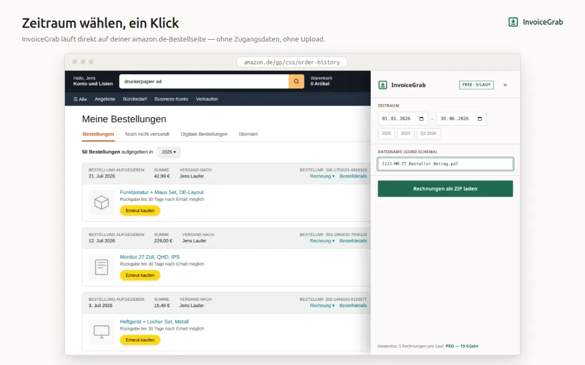
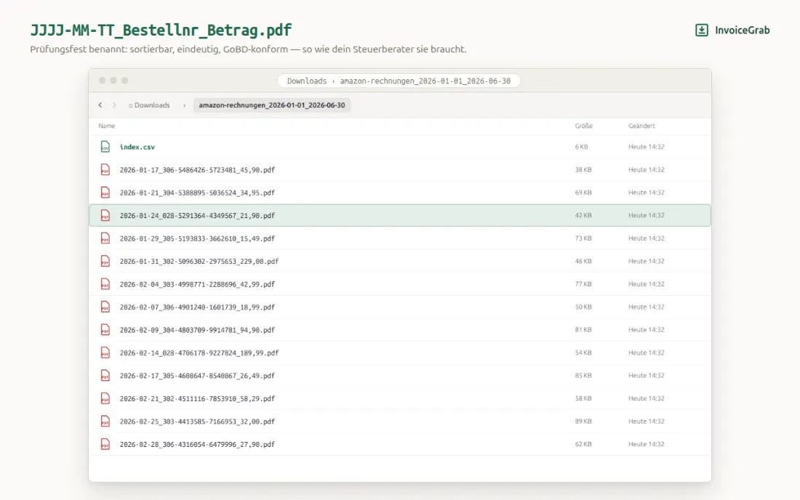
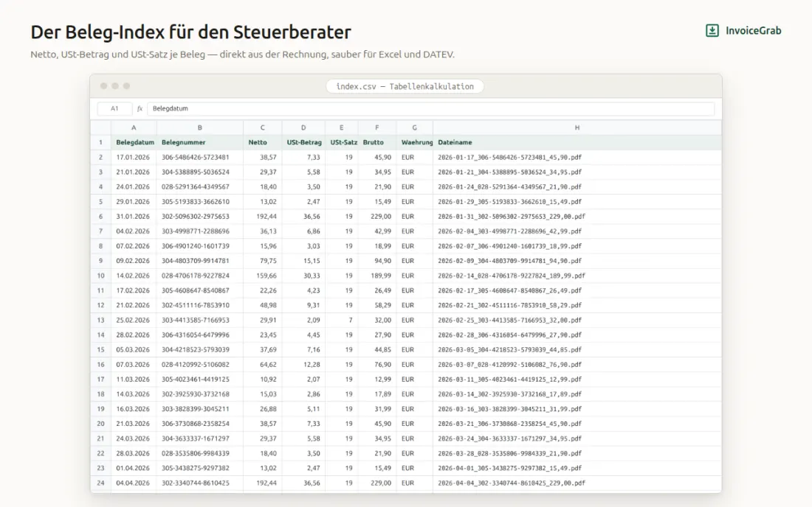
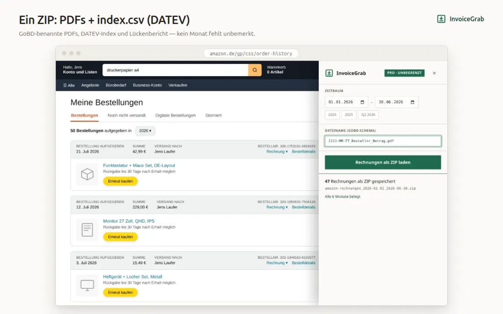

Zeitraum wählen, ein Klick: alle Rechnungs-PDFs deiner amazon.de-Bestellungen landen als ZIP im Download-Ordner. Benannt nach GoBD-Schema, mit einem CSV-Index, den dein Steuerberater direkt lesen kann.
Zu Chrome hinzufügenKostenlos: 5 Rechnungen pro Lauf. PRO 19 €/Jahr oder 3 €/Monat. Läuft in deinem Browser mit deiner bestehenden Amazon-Anmeldung — keine Zugangsdaten, kein Upload, kein Server.
Das Panel öffnet sich direkt auf deiner Bestellseite. Zeitraum als Jahr, Quartal oder freies Datum. Der Fortschritt läuft sichtbar mit — du siehst, bei welcher Bestellung er steht.

Jede Datei heißt JJJJ-MM-TT_Bestellnr_Betrag.pdf — sortierbar, eindeutig, ohne Nacharbeit im Dateimanager.

Aus der Rechnung gelesen, nicht geschätzt. Gemischte Sätze (19 % und 7 % in einer Bestellung) stehen als Splitbuchung in der index.csv: Belegdatum; Belegnummer; Netto; USt-Betrag; USt-Satz; Brutto; Währung; Dateiname.

Die zusammenfassung.txt im ZIP zeigt pro Monat Bestellungen und gefundene Rechnungen, nennt Monate ohne Beleg und listet übersprungene Bestellungen. Fehlendes fällt auf, statt still zu fehlen.

Ein Jahresabschluss zahlt das Abo beim ersten Lauf zurück.
dauerhaft, ohne Konto
oder 3 €/Monat
InvoiceGrab hat keinen Server. Der Lauf passiert im Browser, in deiner bereits angemeldeten Amazon-Sitzung. Die Erweiterung fragt keine Zugangsdaten ab, lädt nichts hoch und liest außerhalb eines von dir gestarteten Laufs nichts.
Ja. Du wählst einen Zeitraum — ein Jahr, ein Quartal oder freie Daten — und InvoiceGrab lädt die Rechnungs-PDFs aller Bestellungen darin in einem Durchgang als ZIP. In der kostenlosen Version sind es 5 Rechnungen pro Lauf, mit PRO unbegrenzt.
Die Dateien werden nach dem Schema JJJJ-MM-TT_Bestellnr_Betrag.pdf benannt: chronologisch sortierbar, eindeutig einer Bestellung zugeordnet und ohne manuelles Umbenennen archivierbar. Die GoBD-Konformität deiner Ablage hängt zusätzlich an deinem Archivsystem — die Benennung ist der Teil, den InvoiceGrab übernimmt.
Nein. Unterstützt wird ausschließlich amazon.de. Weitere Marktplätze stehen auf der Roadmap.
Sie werden übersprungen und in der zusammenfassung.txt namentlich ausgewiesen. InvoiceGrab fordert keine fehlenden Rechnungen bei Marketplace-Händlern an — aber du siehst, welche fehlen.
Nein. InvoiceGrab läuft in deinem Browser und nutzt die Sitzung, in der du ohnehin angemeldet bist. Es gibt kein Login-Feld und keinen Upload.
Im ZIP liegt eine index.csv mit Belegdatum, Belegnummer, Netto, USt-Betrag, USt-Satz, Brutto, Währung und Dateiname — die Spalten, die eine Buchungsvorlage braucht. Gemischte Steuersätze stehen als Splitbuchung.
Die kostenlose Version bleibt dauerhaft kostenlos und lädt 5 Rechnungen pro Lauf. PRO kostet 19 €/Jahr oder 3 €/Monat und hebt die Begrenzung auf.